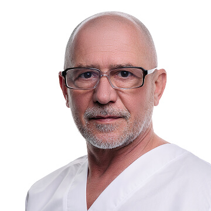
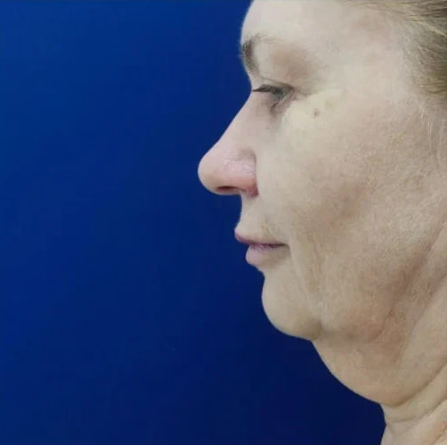
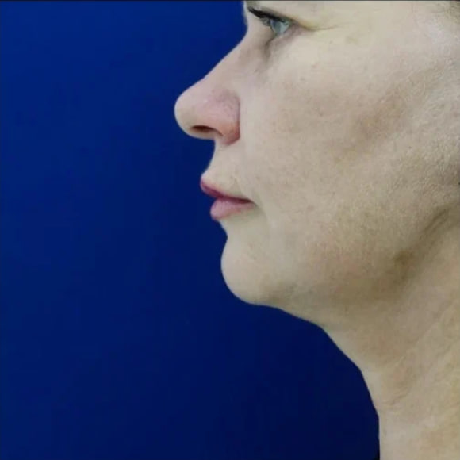
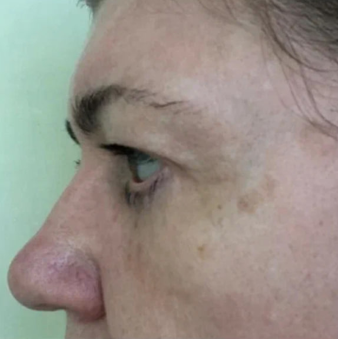
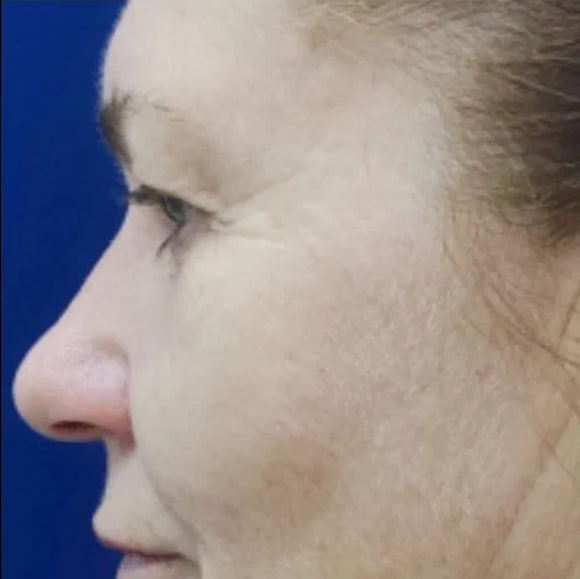
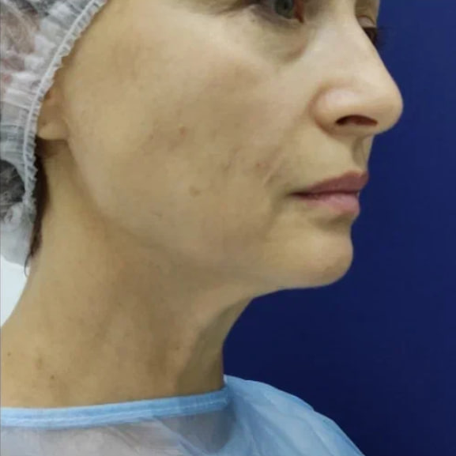
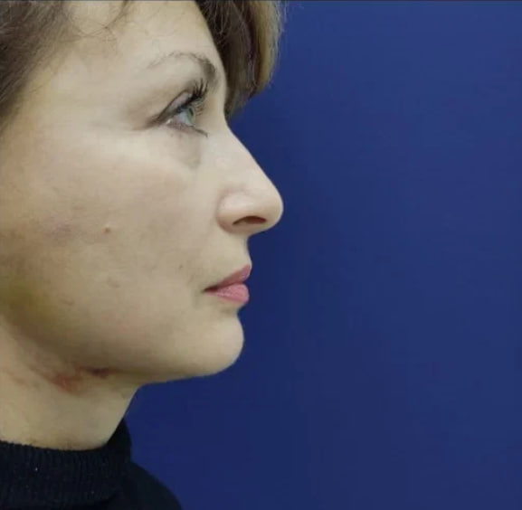

Консультация без спешки
Доктор внимательно выясняет, чем вызвано желание изменений, и берётся за операцию только тогда, когда убеждён в её обоснованности — а не потому, что так «принято» или посоветовал кто-то ещё.
Пластическая и реконструктивная хирургия
Асан Усеинович Джемилев — пластический хирург с более чем 25-летней практикой. Главный врач медицинского центра «Фамилия» в Геленджике и Новороссийске. Каждое решение об операции — совместное, взвешенное и никогда не поспешное.

О враче
Пластический и реконструктивный хирург, врач высшей категории направления. С 2016 года — главный врач и оперирующий хирург медицинского центра «Фамилия» в Геленджике и Новороссийске. До этого руководил медицинской службой в отеле «Гранд Кемпински».
Базовое образование доктор получил в Башкирском государственном медицинском университете по специальности «Лечебное дело», после чего прошёл интернатуру по хирургии на базе Московской медицинской академии имени И. М. Сеченова. Отдельно освоил специализацию «Пластическая хирургия» в Международной медицинской корпорации и повышал квалификацию по комбустиологии и реконструктивной хирургии.
Пациенты отмечают в докторе редкое сочетание: хирургическую точность и человеческое внимание. Он не оперирует «по шаблону» — каждый случай разбирается индивидуально, с учётом анатомии, ожиданий и образа жизни пациента.
Башкирский государственный медицинский университет, специальность «Лечебное дело»
Интернатура по хирургии — Московская медицинская академия им. И. М. Сеченова
Специализация «Пластическая хирургия» — Международная медицинская корпорация
Повышение квалификации: «Комбустиология с курсом реконструктивной хирургии», ММА им. И. М. Сеченова
Главный врач и хирург медицинского центра «Фамилия» (Геленджик, Новороссийск)
Как проходит работа с доктором
Доктор внимательно выясняет, чем вызвано желание изменений, и берётся за операцию только тогда, когда убеждён в её обоснованности — а не потому, что так «принято» или посоветовал кто-то ещё.
Перед вмешательством пациент получает ясное представление о ходе операции, ощущениях после неё и ограничениях на период восстановления — без медицинского жаргона и недосказанности.
По отзывам пациентов, доктор остаётся на связи и в реабилитационный период, отвечая на вопросы и наблюдая за динамикой восстановления.
Направления практики
Ниже — основные направления эстетической и реконструктивной хирургии, с которыми пациенты обращаются к доктору.
Верхняя, нижняя и круговая пластика век — свежий, отдохнувший взгляд без «утяжелённых» век и мешков.
Коррекция формы и функции носа, включая исправление искривления перегородки и восстановление дыхания.
Коррекция контуров тела: устранение избытков кожи, укрепление мышечного каркаса, липосакция и липофилинг.
Увеличение, подтяжка и коррекция формы груди с учётом анатомии и пожеланий пациентки.
Коррекция формы и постановки ушных раковин — деликатно, с сохранением естественных пропорций лица.
Подтяжка нижней трети лица и шеи (в т.ч. методика «булхорн»), возвращающая чёткий контур без «эффекта маски».
Деликатная коррекция интимной зоны с максимально бережным подходом к каждому случаю.
Восстановительные и амбулаторные хирургические вмешательства, включая последствия травм и врождённые особенности.
Полный перечень услуг, показания и противопоказания обсуждаются на очной консультации.
Отзывы пациентов
Ниже — краткий пересказ впечатлений пациентов, оставленных на независимых медицинских сервисах.
Пациентка, которая давно мечтала о блефаропластике, отмечает, что доктор помог справиться с сомнениями и провёл операцию так деликатно, что результат превзошёл ожидания.
— Отзыв о блефаропластике верхних и нижних век
Пациентка, обратившаяся по рекомендации своего косметолога, подчёркивает: доктор выступил не только хирургом, но и хорошим психологом — тактично разобрался в задаче перед операцией.
— Отзыв о подтяжке груди и блефаропластике
После операции на нижней трети лица пациентка описывает доктора как вежливого, внимательного и порядочного специалиста, которому доверила свою внешность.
— Отзыв о коррекции овала лица
Полные отзывы — на независимых площадках ПроДокторов и «Врачи Города».
Результаты
Фотографии реальных пациентов, опубликованные с их согласия. Итоговый результат всегда индивидуален и зависит от анатомических особенностей.


Подтяжка лица и шеи


Блефаропластика


Комплексная омолаживающая операция


Пластика молочных желёз


Коррекция овала лица


Отопластика
Публикация фотографий согласована с пациентами. Результат может отличаться в зависимости от индивидуальных особенностей.
Запись на консультацию
Первая встреча — это разговор, а не обязательство. Расскажите, что вас беспокоит, и доктор поможет разобраться, какое решение подойдёт именно вам.